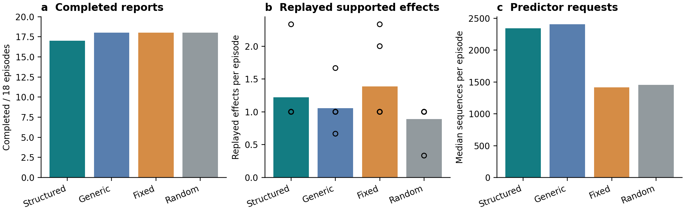
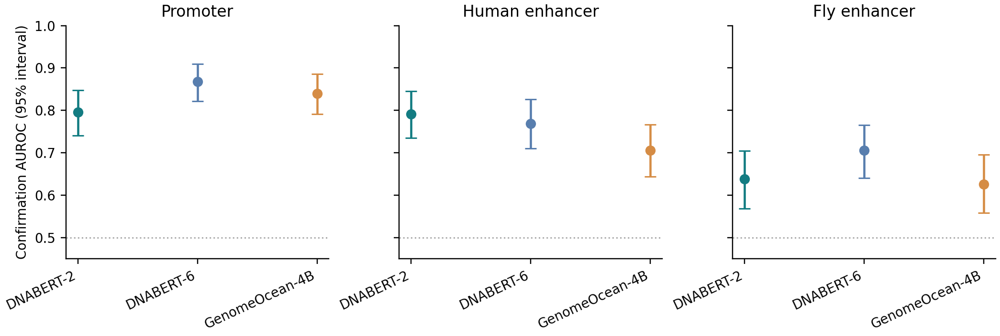
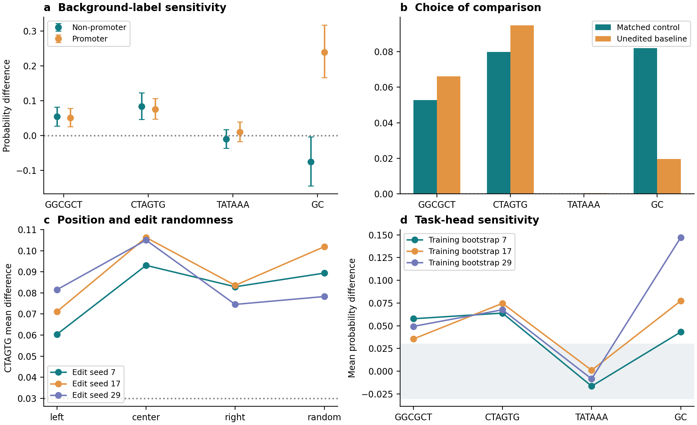

Genomic models can learn patterns across billions of DNA bases. Yet a prediction rarely tells a researcher which pattern mattered, whether it reflects the intended task, or how to test an alternative explanation.
A model might recognize a regulatory sequence. It might also rely on base composition, the surrounding sequence, or a shortcut in the dataset. Distinguishing those possibilities requires more than a convincing explanation. It requires a useful experiment.
We built BioInterpret to help researchers carry out that investigation. In one workspace, a researcher selects a genomic model, uploads a dataset ZIP, and describes the task and interpretation question in ordinary language. The assistant proposes comparisons, calls the model, runs sequence interventions, and returns a report linked to the measurements. Follow-up questions keep the investigation moving.
One workspace, different genomic models
The central idea is to make the research question the starting point. A user might ask, “Which sequence patterns drive promoter predictions?” or “Does this enhancer model respond to a motif, or mainly to GC content?”
BioInterpret separates the assistant that plans the investigation from the genomic model being studied. The language-model backend can change; the current experiments use GLM. The genomic-model menu includes DNABERT, DNABERT-2, and GenomeOcean-4B. Each connects to a common set of prediction and sequence-editing tools, so researchers can ask comparable questions across different architectures.
The current implementation focuses on labeled DNA datasets and binary prediction tasks. Selecting a model and uploading data are part of the interface; users do not need checkpoint paths or access to the research server's filesystem.
From a plausible explanation to a controlled test
Suppose a short DNA motif appears important. Inserting it into another sequence might increase the model's prediction—but that alone does not tell us why. The model could be responding to the exact order of the bases, the added G and C content, or the sequence that was replaced.
BioInterpret can compare the motif with a shuffled version inserted at the same position in the same background. Both edits contain the same number of each base. The difference between their predictions tests the model's response to sequence order under that edit.
The assistant explores candidate explanations before committing to the confirmation tests. The selected motifs, controls, sample budget, and decision rules are recorded before confirmation data are examined. The report then distinguishes effects that are supported, practically small, or still uncertain.
A researcher can ask why a control was chosen, inspect the evidence behind a claim, or ask whether an effect depends on the sequence background. When the next question requires new measurements, it becomes a new investigation with its own record.
What we have tested
Our evaluation includes 108 model investigations across promoter, human-enhancer, and fly-enhancer prediction. The initial comparison covered two BERT encoders; a subsequent extension added GenomeOcean-4B. We compared a structured assistant, a generic assistant, a fixed candidate-ranking procedure, and random candidate selection.
Within each setting, the policies used the same predictor, data partitions, and resource caps. An independent audit then tested the selected effects on separately reserved sequences. The GenomeOcean extension was designed after the initial results, so we report it separately.
In the initial 72 investigations, all 82 initially supported endpoints remained supported in the audit. But the more elaborate planner did not produce the most effects: fixed ranking yielded 1.39 replayed effects per investigation, compared with 1.22 for the structured assistant. It also used fewer predictor requests and no language-model tokens. These counts include repeated contrasts on shared models, rather than independent biological discoveries.

This result gives us a concrete research direction. The value of an assistant must be demonstrated against simpler procedures, especially when a task can be solved by ranking a small set of candidates. All supported enhancer effects in this initial comparison involved GC composition; differences between policies appeared mainly in promoter motif selection.
A larger model raises the same questions
GenomeOcean-4B lets us test the workflow with a different architecture: a causal genomic model pretrained on microbial sequences. All 36 additional investigations completed, and all 33 initially supported effects recurred in the audit. The structured assistant produced 10 replayed effects, the generic assistant and fixed procedure nine each, and random selection five. That small, correlated difference does not establish a general planning advantage.

The larger model did not consistently outperform the smaller encoders. That makes interpretation more valuable: researchers need to understand the behavior of the particular model on their task, rather than assume that scale settles the question.
The details can change the interpretation
A closer promoter investigation illustrates what the reports reveal. With DNABERT-2, inserting CTAGTG increased the predicted probability by about 0.080 relative to a matched shuffled control. The TATAAA comparison had a practically small average effect under the tested edits, while two other comparisons remained inconclusive. These findings describe this predictor under specific interventions; they do not identify a validated regulatory mechanism.
Follow-up checks exposed structure hidden by the averages. A GC-composition edit had opposite average responses on promoter and non-promoter backgrounds. The CTAGTG effect stayed positive across insertion positions and edit seeds. A simple six-mer classifier also outperformed the foundation-model predictor on that split. Prediction quality, intervention response, and biological relevance are separate questions.

Numerical implementation also mattered. Regrouping GenomeOcean inputs into different batches changed some probabilities beyond our declared tolerance. We then replayed 37,270 audit pairs in full precision: all 144 endpoint decisions stayed the same, and the sampled full-precision batch checks passed. Individual probabilities still differed across precisions. The aggregate conclusions survived this check, but that does not make every prediction numerically invariant.
Evidence that can be questioned
A fluent report is only useful if its claims survive inspection. BioInterpret links findings to recorded comparisons and checks selected claims against the evidence. In the detailed promoter case, those checks rejected three report attempts before accepting one, including attempts that overstated inconclusive results. They provide a useful constraint, though they cannot catch every scientific error.
Our synthetic experiments reinforce the need for care: even a model with near-chance accuracy can respond consistently to a motif edit. An interpretation can faithfully describe a model's shortcut. It does not automatically become a biological discovery.
We are extending the evaluation toward more varied questions, datasets grouped by genomic relationships, and independently defined measures of experiment quality. The practical goal is a research assistant that helps scientists choose meaningful tests, understand the evidence, and formulate a better next question.
Research preview. The current results cover computational investigations of DNA classification models. Biological mechanisms require independent validation. Numerical figures are drawn from retained experiment outputs; the overview is a conceptual illustration.